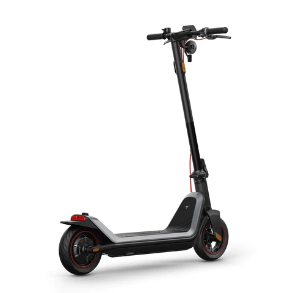
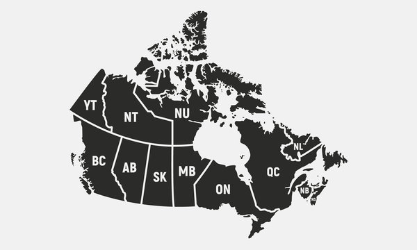

Electric Scooters

View Larger Picture
NIU KQi3 Max
Have fun, save money, and save the planet by using an electric kick scooter to commute, play, and meet all your urban mobility needs.
Features
- Range up to 65km
- Top speed 32km/h
- KQi3 MAX is set to a maximum speed of 32km/h by default to comply with traffic regulations. However if you are riding on private property, you can unlock speeds up to 38km/h in the app.
- 25% hill grade climbing ability
-
25% wider handlebars (47.3’’H × 21.3’’W)
13% wider deck (6.7W’’ × 23.6’’L)
30% fatter wheels (2.5’’) than other adult kick scooters - 9.5’’ rubber self-healing tubeless tires with excellent shock absorption
- Triple-Braking System：Front & rear disc brake and rear electric brake
- High-powered Halo headlight, braking lights and side
-
NIU App (Bluetooth Connectivity)
Lock your NIU kick scooter for peace of mind + Check your riding statistics + Customize your speed (38 km/h)+Cruise control
| Description | Price |
|---|---|
| NIU KQi3 Max Electric Kick Scooter for Adults | $ 1.199,00 |
| NIU KQi3 Pro Electric Kick Scooter for Adults | $ 999,00 |
| NIU KQi2 Pro Electric Kick Scooter for Adults | $ 749,00 |
| NIU KQi3 Sport Electric Kick Scooter for Adults | $ 879,00 |
